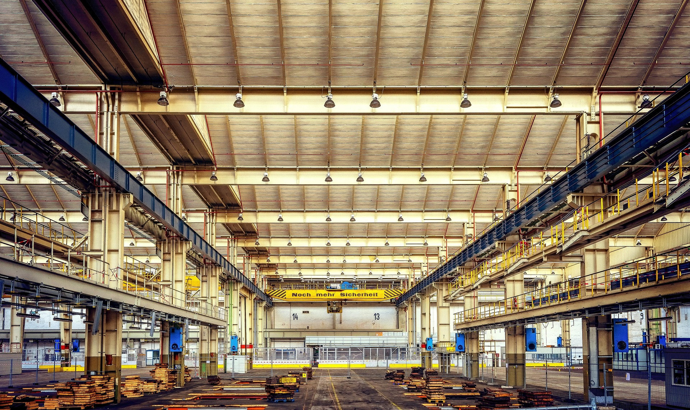

Eletromecânicos e Estruturas para Cabos
Estruturas eletromecânicas para suporte e organização de cabos e equipamentos em ambientes industriais, com leitos, eletrocalhas, perfis estruturais e acabamentos de alta resistência à corrosão.
- Galpões industriais e centros logísticos
- Parques de geração e distribuição de energia
- Instalações fotovoltaicas e abrigos para inversores
- Projetos especiais com estruturas sob medida